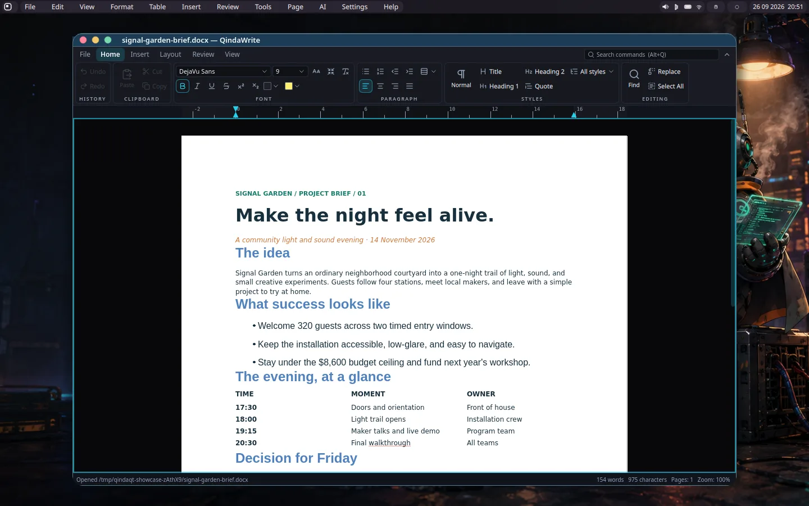

Identify the thing
Stable document, view, and object IDs address a cell, text span, slide, or note block even after a window moves. A label is for people; an ID is for reliable targeting.
01 TRY IT FOR YOURSELF
Interactive conceptAsk for a change in ordinary language. Watch your document respond. See exactly what the agent read, what it changed, and how you take it back.
Start with a small, real-world question.
Signal Garden · fictional event budget · $8,600 spending ceiling
Run the scenario to see an application-verified receipt.
This is a working browser simulation using fictional sample documents. It does not connect to your desktop. The shared agent interface is a proposed extension; the suite’s existing edit operations are the foundation.
The agent asks the application for meaning and actions. The application performs the edit, recalculates its state, and returns an outcome the agent can explain.
02 THE APPLICATION EXPLAINS ITSELF
A spreadsheet is more than visible cells. “What am I looking at?” means knowing the active sheet, selection, formulas, filters, unfinished input, and any dialog blocking the next action.
{
"document": "signal-garden-budget",
"view": "Budget",
"selection": "B5",
"revision": 13,
"values": {
"lighting.quantity": 2,
"planned_cost": 9882,
"ceiling": 8600
},
"available_actions": ["set_cells", "undo"]
}Stable document, view, and object IDs address a cell, text span, slide, or note block even after a window moves. A label is for people; an ID is for reliable targeting.
Include selection, focus, filters, sort order, draft input, validation errors, units, and modal state. A document export alone does not say what your workflow is showing.
Discover “set these cells” or “add speaker notes,” with required inputs and a reason when disabled. The app routes each action through its ordinary editing rules.
A completed request returns the new revision, changed targets, values, warnings, and an undo reference. The model can answer from that result instead of guessing that an edit succeeded.
Qt accessibility already gives controls names, roles, state, and actions. QindaTK’s custom views can expose semantic nodes too. That is useful for reading and activating interface elements. An office partnership also needs richer document operations, exact formulas and units, context about the active workflow, and typed results. The proposed service combines those sources; it does not replace accessibility.
Images, page layout, chart appearance, and drawings can still benefit from vision or a screenshot. Structured state handles the parts the application can describe exactly; visual tools remain available when the question is genuinely visual.
03 GROUNDED IN YOUR CURRENT SUITE
Already implementedQindaOffice has assistant panels, document snapshots, addressable edit operations, and undo for AI edits. The next step is to expose those foundations as a consistent live interface for any authorized agent.

DocumentTools: snapshot, operation guide, apply edits, undo.ActionModel.REAL APPLICATION FOOTAGE
The original recording shows an actual edit, a budget recalculation and undo, a chart, slides, and a note checklist. It predates the proposed agent bridge.
The original audio has been replaced with ElevenLabs narration for this guide. Captions are included.
The suite gives the model a readable snapshot and an operation guide. The model can return a fenced qinda-edits JSON block, which the application parses and applies through the document’s editing code. This supports providers that do not expose native tool calling. You see an edit summary and can undo.
That is already valuable. It is not yet a general external control endpoint. The new bridge would wrap the same document operations in a stable, typed contract and add live workflow state. Existing “CLI provider” support launches a model CLI for the built-in assistant; it does not itself give an outside CLI agent access to an open document.
04 TWO DOORS, ONE APPLICATION
The document should behave the same whichever assistant you use. The model’s provider can change; the application remains responsible for the edit and the outcome.
Select a paragraph or cell, open the assistant, and ask your question. The active window supplies the context you chose. Suggested changes and activity appear beside your work.
Try two lighting packages and tell me whether we still fit.
PartnerDone. Planned cost is $9,882—$1,282 above your ceiling. I changed B5; you can undo that edit.
Grant an agent access to a specific open document. It discovers the available operations, reads the current view, makes the authorized change, and reports the verified result.
$ qinda-agent documents list $ qinda-agent inspect --document budget $ qinda-agent invoke --document budget \ --action calc.set_cells \ --args '{"cells":{"B5":"2"}}' \ --if-revision 12 ✓ B5 updated · revision 13 planned_cost: 9882 · over_ceiling: 1282
MCP gives compatible agents a standard way to discover tools and read resources. A CLI is convenient for shell workflows; an in-process API is convenient for the embedded assistant. All three should adapt the same service, so behavior and permissions do not drift.
A local service can listen on a user-owned Unix socket and exchange JSON-RPC messages. A small CLI can print JSON for scripting; an MCP adapter can expose snapshots as resources and actions as tools. Desktop permissions and explicit document grants govern what each client can access. MCP compatibility varies by client and configuration; a generic CLI can remain a fallback.
Remote access is an additional design choice, not required for the first version. The proposed first implementation stays local and connects to an already running application. It is different from qtk-preview --dump-json, which launches a separate QML scene for inspection.
05 A HUMAN DAY, WITH HELP
Imagine finishing a planning meeting. Your notes, brief, budget, and presentation belong to one project. You choose which documents the partner can use, and it makes the handoffs legible.
“Explain what changed in this budget.” The partner reads cell inputs, formula results, and the selected sheet. It cites cells and distinguishes a saved value from your uncommitted draft.
“Turn these notes into decisions and open questions.” The existing live-notes pipeline already combines transcription and model decisions. A shared interface could expose accepted notes and task proposals to your other tools.
“Update the approval slide from the revised brief.” The partner proposes changes tied to the source documents. Each document gets its own result and undo; a future multi-document transaction requires additional design.
If a note says “increase the allowance” without a number, the partner should ask for the missing amount. If you selected a filtered table, it should report that scope. If it cannot read the referenced document, it should ask you to share it. Model fluency does not turn an assumption into a document fact.
06 INSIDE THE TOOLKIT
Build the contract into the toolkit, then let applications contribute their document semantics. Click a part of the diagram to see its job.
Choose among known next steps, classify a situation, or gate a larger model call. Supply explicit choices and current structured state. Your live-notes code already uses this pattern.
Understand your request, break a task into steps, resolve ambiguity with you, and explain outcomes. It can propose a valid action; the app decides whether that action can run.
Validate targets and values, apply changes, calculate formulas, enforce permissions, maintain undo, and return exact results. A model’s confidence is not a success receipt.
Toolkit: an attached semantic descriptor for standard controls; stable IDs and scopes; typed action schemas; snapshot and event infrastructure; local transport adapters; permission, revision, request, and result handling. Existing accessibility and command machinery supply much of the foundation.
Application: a provider for domain state and operations. Calc describes sheets, cells and formula results; Write describes ranges and paragraphs; Show describes slides and objects; Note describes pages and blocks. Custom charts, timelines, canvases, and virtualized views contribute domain providers rather than exposing every visual child.
Integration: retain QindaOffice’s per-window ownership and existing action IDs. Adapt ActionModel and DocumentTools to the shared contract. Enrich the current operation guide with formal input/output schemas and route both human and agent actions through the same editing code.
07 COLLABORATION, WITHOUT SURPRISES
A partner must handle the fact that you are still using the application. Try a few failures: the app should explain them, preserve your work, and offer a useful next step.
Highlight changed targets and show an action log. Give long-running work progress and a Stop control. Cancellation prevents later steps; it cannot erase an already completed external effect.
Grant read or edit access to chosen documents. A local connection is not unlimited authority. Sending document context to a hosted model is a separate choice from using a local model.
Normal document edits use the document’s undo stack. A first release can group edits within one document. Sending a message or exporting elsewhere needs its own consequence and permission rules.
Text inside a document can describe work, but should not grant access or become an instruction that overrides you. The app enforces the action boundary regardless of what the model proposes.
08 HOW FAR AWAY ARE WE?
This is an integration project with a substantial head start. Your office suite provides better starting points than a generic screenshot-driven app: the document operations already exist.
Expose active sheet, selection, values, formulas and revision. Describe set_cells and undo. Connect one embedded client and one local CLI client. Verify the receipt against the app’s recalculated state.
Done means: read → edit → recalculate → explain → undo, with a stale-edit test and a visible activity log.
Add formal schemas, per-window scope, event subscriptions, asynchronous task results, edit grants, server-side validation, request deduplication, and local CLI/MCP adapters. Start coverage for Write, Show and Note through their current tools.
Done means: the same client contract works across the first supported apps, with tests for failure and concurrent human edits.
Cover charts, rich formatting, canvas objects, large virtualized data, and app-specific operations. Design multi-document coordination, provenance and recovery. Add other operating systems and remote access only where useful.
Done means: measured task coverage and dependable recovery, rather than a claim that every application action is exposed.
Planning estimates for one experienced Qt developer, assuming the current document tools can be reused. These are rough engineering estimates, not measured delivery dates; deep formatting fidelity and cross-app coordination expand the scope.
THE BEST FIRST MOVE
The budget scenario has exact values, a visible calculation, a clear target, and meaningful undo. It proves the human experience and the protocol together. Write, Show and Note can then adopt the contract through the editing seams they already have.
Try the experience again →EVIDENCE & CREDITS
The source review reflects QindaTK becfc7d and QindaOffice a89bb2a on September 29, 2026. Local, uncommitted office experiments are excluded from the “already implemented” claims. Tk.AgentHost, qinda-agent, typed receipts, and the cross-app journey are proposed designs.
AccessibilityAdapter, CommandRegistry, document/selection/validation/transaction services, ScriptRuntime, and preview dump tools.libs/office_ai/src/document_tools.*, assistant_controller.*, system_one_client.*, and each app’s *_tools.cpp.libs/office_quick/src/action_model.h; suite decision D-058 describes assistant editing.Narration: ElevenLabs Iago; scenario outcomes: ElevenLabs Brian. Real screenshot and film assets come from the QindaQt desktop showcase and use public fictional sample documents. New guide code is LGPL-3.0-or-later; reused showcase media retain their GPL-3.0-or-later provenance.